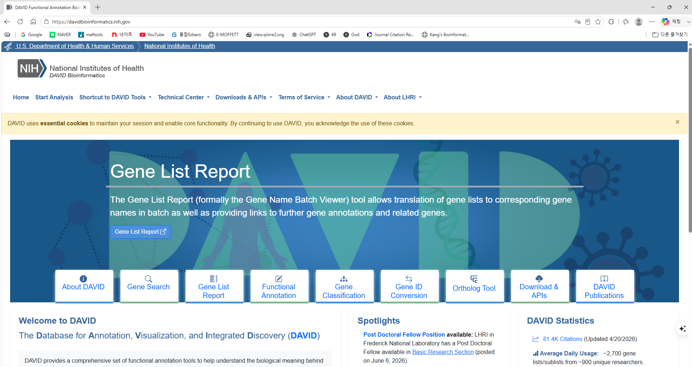
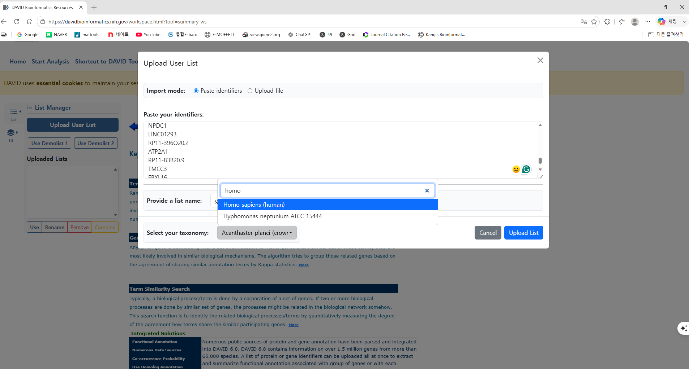
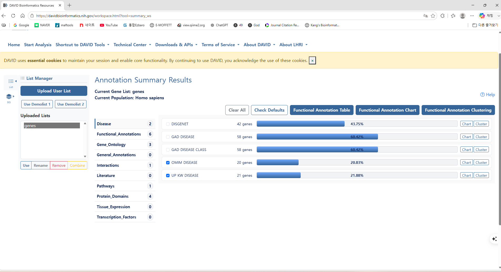

이번 단계의 목표
Step 06에서 만든 Up-regulated 및 Down-regulated gene 목록을 DAVID 웹사이트에 직접 입력하고, GO와 KEGG 결과를 확인합니다.
1. DAVID Functional Annotation 열기
아래 버튼으로 DAVID 홈페이지에 접속한 뒤, 홈 화면 중앙의 Functional Annotation 타일을 클릭합니다. 상단의 Start Analysis를 이용해도 같은 분석 화면으로 이동할 수 있습니다.

2. 분석할 유전자 목록 준비
Step 06에서 생성한 파일 중 먼저 Up 유전자 목록을 사용합니다. 실습에서는 Gene symbol이 한 줄에 하나씩 들어 있는 파일이 가장 이해하기 쉽습니다.
| 분석 목적 | 사용 파일 | ID 종류 |
|---|---|---|
| Up-regulated gene 분석 | up_gene_symbols.txt | Official gene symbol |
| Down-regulated gene 분석 | down_gene_symbols.txt | Official gene symbol |
| 분석 대상 전체 유전자 | background_gene_symbols.txt | Official gene symbol |
IL6
STAT3
CXCL8
MMP9
VEGFA목록에는 열 이름을 넣지 않고, 유전자 하나당 한 줄로 준비합니다. 빈 줄, 따옴표, 쉼표는 제거하는 것이 좋습니다.
3. Upload User List에 유전자 입력
- 왼쪽 List Manager에서 Upload User List를 클릭합니다.
- Paste identifiers를 선택하고 유전자 목록을 붙여넣습니다. 파일 자체를 올리려면 Upload file을 선택합니다.
- 목록 이름을
Up_genes처럼 알아보기 쉽게 입력합니다. - Select your taxonomy에서 사람 데이터라면 Homo sapiens (human)을 선택합니다.
- Upload List를 클릭합니다.

4. ID 인식 결과 확인
업로드 후 DAVID가 입력 유전자를 얼마나 인식했는지 확인합니다. 인식되지 않은 유전자가 많다면 다음 항목을 점검합니다.
- Gene symbol의 철자와 대소문자가 정확한가?
- 사람과 마우스 등 taxonomy가 올바른가?
- 오래된 gene symbol 또는 별칭이 포함되어 있지 않은가?
- Probe ID를 gene symbol처럼 입력하지 않았는가?
- 한 셀에 여러 symbol이
///,;등으로 묶여 있지 않은가?
5. Annotation Summary 화면 이해하기
업로드가 완료되면 Annotation Summary Results 화면이 나타납니다. 왼쪽에는 업로드한 목록이 표시되고, 가운데에는 기능 주석 범주가 표시됩니다.

| 화면 요소 | 역할 |
|---|---|
| Uploaded Lists | 현재 등록된 gene list를 선택·변경·삭제합니다. |
| Gene_Ontology | Biological Process, Cellular Component, Molecular Function 등 GO 주석을 확인합니다. |
| Pathways | KEGG를 포함한 pathway annotation을 확인합니다. |
| Functional Annotation Table | 유전자별로 연결된 주석을 표 형태로 확인합니다. |
| Functional Annotation Chart | 각 GO term과 pathway의 enrichment 통계를 확인하는 핵심 결과 화면입니다. |
| Functional Annotation Clustering | 서로 유사하고 중복되는 annotation term을 묶어 요약합니다. |
6. GO와 KEGG 범주 선택
전체 항목을 무조건 선택하기보다 연구 질문에 필요한 범주부터 확인합니다.
- GO Biological Process: 유전자가 관여하는 생물학적 과정
- GO Cellular Component: 유전자 산물이 주로 작용하는 세포 내 위치
- GO Molecular Function: 유전자 산물의 분자 수준 기능
- KEGG Pathway: 대사·신호전달·질환 관련 경로
처음에는 GO Biological Process와 KEGG를 중심으로 살펴보고, 이후 필요에 따라 Cellular Component와 Molecular Function을 추가하는 것이 좋습니다.
7. Functional Annotation Chart 해석
| 결과 열 | 의미 | 해석 시 확인할 점 |
|---|---|---|
| Count | 해당 term에 포함된 입력 유전자 수 | 너무 적은 수의 유전자만으로 만들어진 결과인지 확인 |
| % | 입력 목록 중 해당 term 유전자의 비율 | 전체 입력 gene 수에 따라 값이 달라짐 |
| P-value | 과대표현에 대한 보정 전 유의확률 | 단독 기준으로 최종 결론을 내리지 않음 |
| Fold Enrichment | background에서 기대되는 비율보다 몇 배 많은지 표시 | 값이 커도 Count가 매우 작을 수 있음 |
| Benjamini | 다중검정을 고려한 FDR 계열 보정값 | 일반적으로 우선 확인하는 통계값 |
| Genes | 해당 term에 포함된 실제 입력 유전자 | 결과를 주도하는 핵심 유전자를 직접 확인 |
8. Up과 Down 목록을 각각 분석
up_gene_symbols.txt를 업로드하고 GO·KEGG 결과를 저장합니다.- 왼쪽 List Manager에서
down_gene_symbols.txt를 새 목록으로 업로드합니다. - Down 목록을 선택한 뒤 같은 annotation 범주로 다시 분석합니다.
- Up과 Down 결과의 term, Count, Fold Enrichment, Benjamini와 구성 유전자를 비교합니다.
results/enrichment/
├─ DAVID_up_annotation_chart.txt
├─ DAVID_up_annotation_cluster.txt
├─ DAVID_down_annotation_chart.txt
├─ DAVID_down_annotation_cluster.txt
└─ DAVID_analysis_note.txt다운로드 파일명에는 Up/Down 구분을 반드시 넣고, 분석 날짜와 사용한 DAVID 화면 또는 데이터베이스 버전도 함께 기록합니다.
9. Background를 사용할 때
엄밀한 과대표현분석에서는 모든 사람 유전자보다, 실제 microarray 플랫폼에서 측정되고 전처리 후 분석에 남은 유전자 전체를 background로 사용하는 것이 더 적절합니다.
| Gene List | Background | ID 체계 |
|---|---|---|
up_gene_symbols.txt | background_gene_symbols.txt | Gene symbol |
down_gene_symbols.txt | background_gene_symbols.txt | Gene symbol |
왼쪽의 BG 또는 background list 관리 기능에서 목록을 등록합니다. 웹사이트 버전에 따라 메뉴 배치가 달라질 수 있으므로, 등록 후 현재 background가 사용자 목록으로 표시되는지 확인합니다.
10. 결과 해석 시 주의사항
- 유의한 DEG가 거의 없다면 cutoff를 임의로 완화해 DAVID 결과를 억지로 만들지 않습니다.
- Benjamini 등 다중검정 보정값을 우선 확인합니다.
- GO term은 계층구조와 유전자 공유 때문에 비슷한 결과가 반복될 수 있습니다.
- Fold Enrichment가 높아도 Count가 작으면 결과가 일부 유전자에 좌우될 수 있습니다.
- 질환명이 포함된 KEGG term이 나왔다고 바로 질환 기전으로 단정하지 않습니다.
- Functional Annotation Clustering은 중복 term을 정리하는 보조 수단이며, cluster 이름 자체보다 포함 term과 gene을 확인합니다.
- ORA에서 충분한 결과가 없다면 전체 유전자 순위를 사용하는 GSEA를 고려합니다.
실습 문제
- Up 유전자 목록을 DAVID에 업로드하고 입력 gene 수와 인식된 gene 수를 기록하세요.
- GO Biological Process에서 Benjamini 값이 가장 작은 term 5개를 정리하세요.
- KEGG 결과 중 하나를 선택하고 Count, Fold Enrichment, Benjamini 및 포함 유전자를 기록하세요.
- 같은 과정을 Down 유전자 목록에 반복하세요.
- Up과 Down에 공통으로 나타나는 term이 있다면 실제 구성 유전자와 logFC 방향을 비교하세요.
- 선택한 pathway가 활성화 또는 억제되었다고 말할 수 있는지, 가능하거나 불가능한 이유를 두 문장으로 작성하세요.